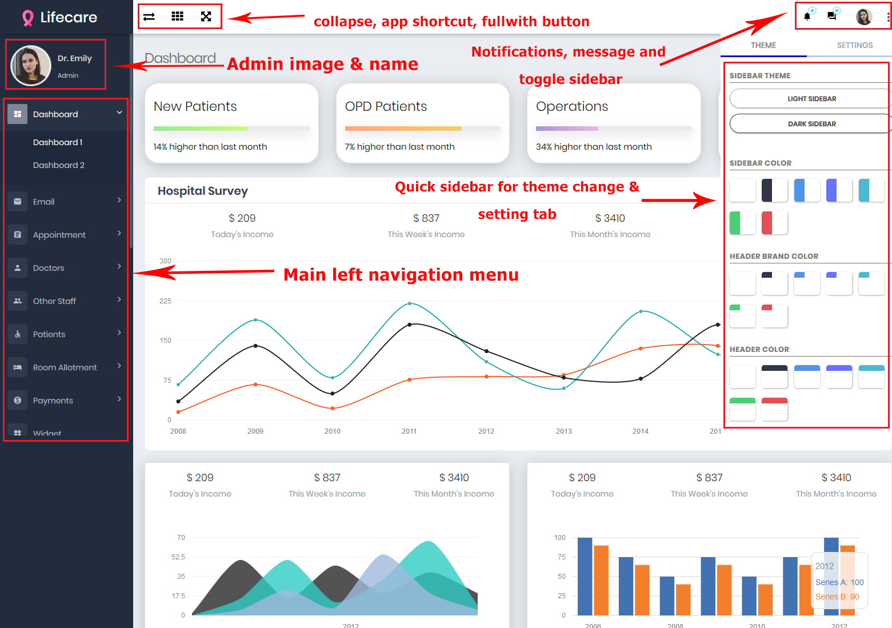
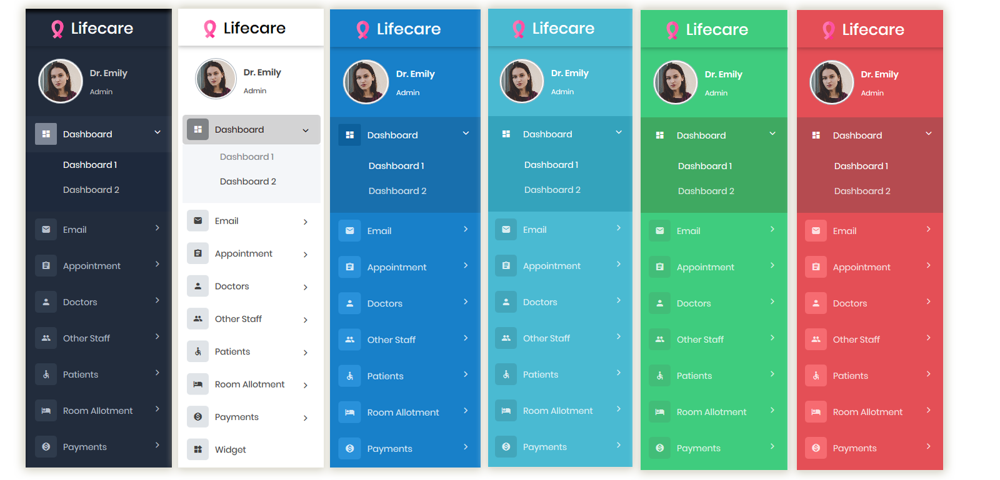
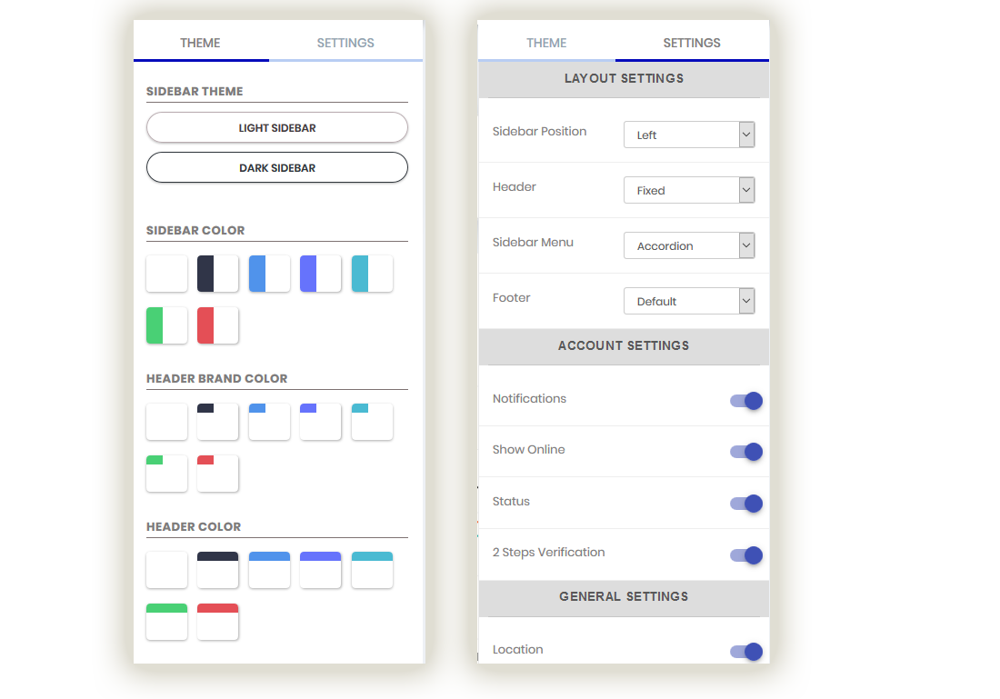

.......
Sunray - Bootstrap 4 Medical Admin Dashboard Template For Hospital & Clinics
version 1.0
Thank You
Thank you for buying Sunray Admin and supporting Redstartheme. Feel free to contact me if you have any questions.
Also, email me if you have any feature requests or advises, I'll happy to help you.
Our promise is that Pleasure will be constantly kept up to date.
Thank You.
Overview
- Item Name : Sunray - Bootstrap 4 Medical Admin Dashboard Template For Hospital & Clinics
- Item Version : v 1.0
- created: 07/05/2018
- latest update: 07/05/2018
- by: RedStarTheme
- email: redstartheme@gmail.com
Introduction #back to top
The Sunray Hospital Admin is a Bootstrap 4 admin dashboard template with huge collection of reusable UI components and integrated with jQuery plugins. Template have also Material Design components, which you can use in your application.
Sunray Hospital Admin is a lightweight and easy to use, clean and polished, resourceful and reliable, responsive HTML5 and Bootstrap 4 admin template.It works natively on mobile devices, making it an accessible way of managing your own website from wherever you are.
Folder Structure #back to top
Admin/
Documentation/ ├── css/ ├── Fonts/ └── Images/ └── Js/ └── index.html/ Source/ └── assets/ └──css/ └──img/ └──js/ └──plugins/ └── admin/ └──fonts/ └──.html/
Custom Theme #back to top
The Sunray Admin comes with 21 different combinations themes, User can select any theme as per her/his choice.
Key point in Sunray Admin is the custom theme, You cam set ANY COLOR theme of your choice.
You need to change in theme-color.css file in css folder. You can set color for --sidebar-color
--sidebar-font-color --logo-color --header-color value as per your choice. Just delete header-white dark-sidebar-color logo-dark from body tag
and add header-custom custom-sidebar-color logo-custom class in body tag. Thats it !!!
Template Structure#back to top
Template Structure
This template is fully responsive and fluid layout. Following are the general structures.
Page Head
Below code is used at the beginning of all HTML pages
<!DOCTYPE html> <html lang="en"> <head>Sunray | Bootstrap Responsive Hospital Admin Template </head>
Main Structure

Following are the markup of main structure.
Left Side

Following are the markup of left side. Which contains logo and side bar navigation.

Left Navigation Menu
Following are the markup of left navigation. All Pages can be navigate using Left Navigation Sidebar.
- .................... .............. Sidebar Menu ..............
............
Quick Sidebar
In Quick sidebar chat & setting tab are available, using that you can chat with user and setting tab is used for layout related setting in application.
Header
Header section structure are as follows. Which contains toggle button, Language sections, and notifications.
Activate parent
To activate Parent Menu have to add class "active".
...
Activate parent & sub menu
To activate Parent Menu with Sub Menu have to add "active" class and "selected" in span.
Material Design Template#back to top
Require Plugins
For use material design component you just required to add plugins in template. Followings are require plugins for material design template
<link rel="stylesheet" href="css/material_style.css"/> <link rel="stylesheet" href="js//material-datetimepicker/bootstrap-material-datetimepicker.css" /> <script src="js/material/material.min.js"></script/> <script src="js/getmdl-select.js" type="text/javascript"></script> <script type="text/javascript" src="js/material-datetimepicker/moment-with-locales.min.js"></script> <script type="text/javascript" src="js/material-datetimepicker/bootstrap-material-datetimepicker.js"></script> <script type="text/javascript" src="js/material-datetimepicker/datetimepicker.js"></script>Layouts#back to top
You can visible the top header, left side and footer fixed to its position.You can also change this from setting tab of chat panel.
Boxed Layout
To enable boxed layout please add class
.page-boxedtobodytag, and need to addcontainerclass in<div class="page-header-inner container">div. and place whole<div class="page-container">tag in<div class="container">div. See bellow sample code.Sidebar Collapse Layout
To enable collapsed layout please add class
.sidemenu-closedtobodytag, and addsidemenu-closedclass in sidemenu-container ui tag. Sample code: